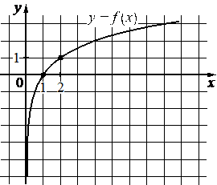

Авторский разбор и аудит предварительны; внешней экспертизы нет.
Модель автора: claude-opus-5-5 (opus; effort=low); в основных частотах: True ·
Впишите правильный ответ.
На рисунке изображён график функции вида . Найдите
значение .

КЭС: 3.5 Показательная и логарифмическая функции, их свойства и графики
3
| ID / вход | Действие | Результат | Локальные KC |
|---|---|---|---|
| s1 · condition | Считать с графика отмеченную точку с целыми координатами, отличную от (1; 0) | График проходит через точку (2; 1) | kc1 |
| s2 · condition, s1 | Подставить координаты точки в f(x)=log_a x и найти основание | log_a 2 = 1, откуда a = 2 | kc2 |
| s3 · s2 | Вычислить значение функции f(8)=log_2 8 | f(8) = 3 | kc3 |
[
{
"id": "m1",
"name": "Восстановление формулы по точке графика и вычисление значения",
"step_ids": [
"s1",
"s2",
"s3"
]
}
]По изображению графика на клетчатой сетке определить координаты отмеченной точки, лежащей в узле сетки.
{
"local_kc_id": "kc1",
"status": "match",
"catalog_kc_id": "graph_coordinates",
"evidence": [
{
"ref": "step:s1:action",
"quote": "Считать с графика отмеченную точку с целыми координатами, отличную от (1; 0)"
},
{
"ref": "step:s1:result",
"quote": "График проходит через точку (2; 1)"
},
{
"ref": "image:assets/81306951c5c996a342ee12d0.png",
"region_description": "Клетчатая сетка с подписанными делениями 1 на осях; на кривой y=f(x) отмечены жирные точки в узлах (1; 0) и (2; 1), под второй подписана абсцисса 2, слева ордината 1."
}
],
"context_refs": [
"image:assets/81306951c5c996a342ee12d0.png"
],
"alternatives_checked": [],
"rationale": "Операция — считывание координат отмеченной точки графика по установленному масштабу сетки; объект — точка в узле сетки; результат — пара (2; 1). Восстановление формулы выполнено отдельно в s2, что согласуется с границей определения.",
"proposal": null,
"blocking": false,
"issue_ids": []
}Подставить координаты известной точки графика в формулу функции заданного вида и решить полученное уравнение относительно неизвестного параметра.
{
"local_kc_id": "kc2",
"status": "new_candidate",
"catalog_kc_id": null,
"evidence": [
{
"ref": "step:s2:action",
"quote": "Подставить координаты точки в f(x)=log_a x и найти основание"
},
{
"ref": "step:s2:result",
"quote": "log_a 2 = 1, откуда a = 2"
}
],
"context_refs": [
"condition",
"step:s1:result"
],
"alternatives_checked": [
{
"catalog_kc_id": "literal_3ac0ecd3cd49",
"reason": "Восстановление основания показательной функции y=a^x, а не логарифмической."
},
{
"catalog_kc_id": "direct_proportion",
"reason": "Только y=kx."
},
{
"catalog_kc_id": "literal_51a8c0abd718",
"reason": "Только y=a√x."
},
{
"catalog_kc_id": "literal_9a635e89ccb3",
"reason": "Решение простейшего логарифмического уравнения обычно относительно аргумента; здесь неизвестно основание, и не включена подстановка точки в формулу функции."
}
],
"rationale": "Наблюдаемое действие — подстановка точки (2; 1) в f(x)=log_a x и нахождение основания из log_a 2=1 (a^1=2). Авторский кандидат сформулирован обобщённо для любого вида функции; в каталоге есть только узлы для конкретных классов (показательная, прямая пропорциональность, корневая), логарифмического нет.",
"proposal": {
"name": "Восстанавливать основание логарифмической функции по точке",
"definition": "Для f(x)=log_a x по известной точке (x0; y0) с x0>0, x0≠1, y0≠0 найти основание из a^{y0}=x0 с учётом a>0, a≠1."
},
"blocking": false,
"issue_ids": [
"i1"
]
}Найти значение логарифма, когда аргумент является целой степенью основания, по определению логарифма.
{
"local_kc_id": "kc3",
"status": "match",
"catalog_kc_id": "literal_d66dd830e876",
"evidence": [
{
"ref": "step:s3:action",
"quote": "Вычислить значение функции f(8)=log_2 8"
},
{
"ref": "step:s3:result",
"quote": "f(8) = 3"
}
],
"context_refs": [
"step:s2:result"
],
"alternatives_checked": [
{
"catalog_kc_id": "literal_6308771d01a6",
"reason": "Подстановка аргумента в формулу присутствует, но тривиальна; содержательное действие кандидата — вычисление логарифма по определению, что точнее описывает literal_d66dd830e876."
}
],
"rationale": "Операция — нахождение показателя степени основания 2, равной аргументу 8 (2^3=8); соответствует определению вычисления логарифма по определению. Основание взято из s2.",
"proposal": null,
"blocking": false,
"issue_ids": []
}[]
[
{
"id": "i1",
"kind": "boundary",
"refs": [
"step:s2:action"
],
"description": "Авторский kc2 описан как универсальный «параметр функции заданного вида», тогда как каталог дробит восстановление по классам функций; обобщённый узел перекрывал бы существующие узлы. Предложение сужено до логарифмической функции. Математически шаг верен: log_a 2=1 даёт a=2, ответ 3 согласуется с рисунком.",
"blocking": false,
"affected_local_kc_ids": [
"kc2"
]
}
]{
"author_path": "data/annotation/runs/2026-11-09-fipi-team-bogdan108-next-100/raw/author/ECB413.json",
"auditor_path": "data/annotation/runs/2026-11-09-fipi-team-bogdan108-next-100/raw/auditor/ECB413.json",
"accepted_after_review": null
}